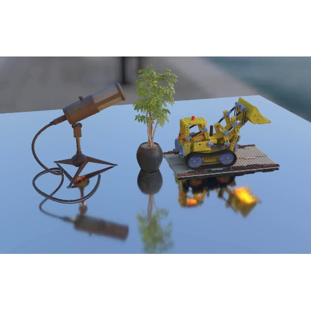
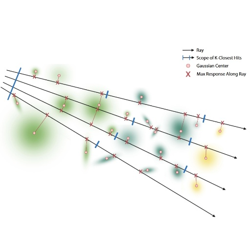
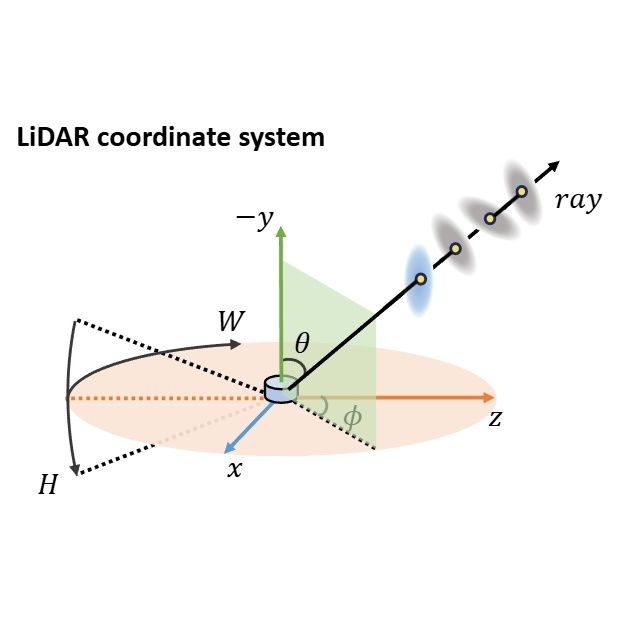
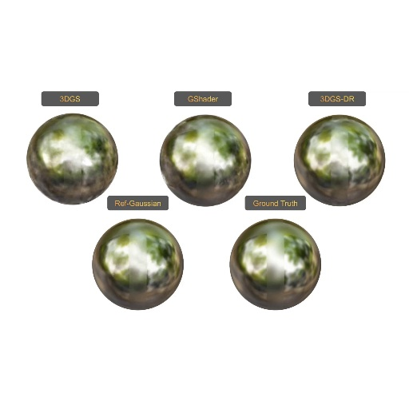

|
Chun Gu - 顾淳 I'm a first-year Ph.D. student at Fudan University under the supervision of Prof. Li Zhang. I'm interested in Computer Vision and Graphics, especially in 3D reconstruction. |
{kind=link}
Publications & Projects |
|

|
IRGS: Inter-Reflective Gaussian Splatting with 2D Gaussian Ray Tracing
Chun Gu, Xiaofei Wei, Zixuan Zeng, Yuxuan Yao, Li Zhang arXiv, 2024 arXiv / project page / code 
In this paper, we introduce inter-reflective Gaussian splatting for inverse rendering. We apply the full rendering equation without simplification and compute incident radiance on the fly using the proposed differentiable 2D Gaussian ray tracing. |
|  |
An implementation of 3D Gaussian Ray Tracing
Chun Gu Open-source Project code  /
gstracer backend
/
gstracer backend 
An implementation of 3D Gaussian Ray Tracing, inspired by the work 3D Gaussian Ray Tracing: Fast Tracing of Particle Scenes. |
|

|
GS-LiDAR: Generating Realistic LiDAR Point Clouds with Panoramic Gaussian Splatting
Junzhe Jiang, Chun Gu, Yurui Chen, Li Zhang ICLR, 2025 arXiv / code 
A novel framework for generating realistic LiDAR point clouds with panoramic Gaussian splatting. |
|

|
Ref-Gaussian: Reflective Gaussian Splatting
Yuxuan Yao*, Zixuan Zeng*, Chun Gu, Xiatian Zhu, Li Zhang ICLR, 2025 arXiv / project page / code 
A Reflective Gaussian splatting framework characterized with two components: (I) Physically based deferred rendering; (II) Gaussian-grounded inter-reflection. |
|
Diffusion²: Dynamic 3D Content Generation via Score Composition of Orthogonal Diffusion Models
Zeyu Yang*, Zijie Pan*, Chun Gu, Li Zhang ICLR, 2025 arXiv / code 
In this paper, we propose to achieve 4D generation from directly sampling the dense multi-view multi-frame observation of dynamic content by composing the estimated score of pretrained video and multi-view diffusion models that have learned strong prior of dynamic and geometry. |
Invited talk at Shenlanxueyuan on 3D generation with SDS
Chun Gu video / slides Providing a brief introduction to the progress in 3D generation using Score Distillation Sampling (SDS). |
|
|
Tetrahedron Splatting for 3D Generation
Chun Gu, Zeyu Yang, Zijie Pan, Xiatian Zhu, Li Zhang NeurIPS, 2024 (Spotlight) arXiv / project page / code 
Integrating surface-based volumetric rendering within a structured tetrahedral grid, utilizing tetrahedra for splatting. |
|
|
Periodic Vibration Gaussian: Dynamic Urban Scene Reconstruction and Real-time Rendering
Yurui Chen*, Chun Gu*, Junzhe Jiang, Xiatian Zhu, Li Zhang arXiv, 2023 arXiv / project page / code 
A unified representation model for large-scale dynamic urban scene reconstruction. |
|
|
Relightable 3D Gaussian: Real-time Point Cloud Relighting with BRDF Decomposition and Ray Tracing
Jian Gao*, Chun Gu*, Youtian Lin, Hao Zhu, Xun Cao, Li Zhang, Yao Yao ECCV, 2024 arXiv / project page / code 
A novel differentiable point-based rendering framework for material and lighting decomposition from multi-view images, enabling editing, ray-tracing, and real-time relighting of the 3D point cloud. |

|
Unofficial implementation of "Zip-NeRF: Anti-Aliased Grid-Based Neural Radiance Fields"
Chun Gu Open-source Project code 
An unofficial pytorch implementation of "Zip-NeRF: Anti-Aliased Grid-Based Neural Radiance Fields" based on multinerf. |
|
Single-view Neural Radiance Fields with Depth Teacher
Yurui Chen, Chun Gu, Feihu Zhang, Li Zhang ICLR workshop 2023 arXiv Combining the (coarse) planar rendering and the (fine) volume rendering to achieve higher rendering quality and better generalizations. A depth teacher net that predicts dense pseudo depth maps is used to supervise the joint rendering mechanism and boost the learning of consistent 3D geometry. |
|
The website template was borrowed from Jon Barron. |